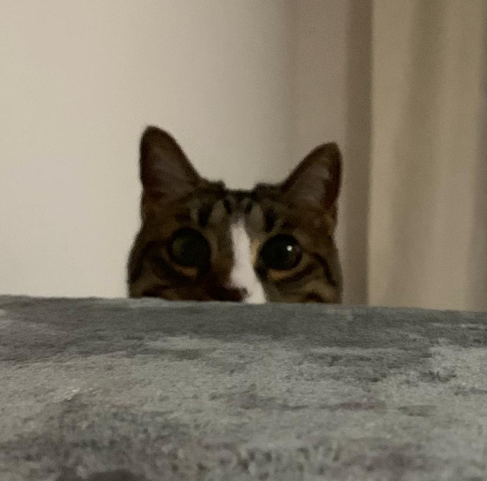

¡Hola! mi nombre es Isabela Montoya Alarcón, tengo 18 años y me encanta la dermatología y el maquillaje.
Actualmente estoy estudiando Ingeniería Informática en el Politécnico Jaime Isaza Cadavid
Tengo una gatita llamada Venus y tiene 4 años
Fuera de la Ingeniería, disfruto jugar videojuegos, reunirme con mis amigos, escuchar música y jugar con mi gata
Aspiro en unos cuantos años tener bastantes conocimientos que me permitan tener un buen desenpeño en el mundo laboral, creando proyectos innovadores que ayuden a las personas
Soy una persona curiosa y apasionada por aprender. Valoro la honestidad, la colaboración y la autenticidad en mi trabajo y relaciones.
